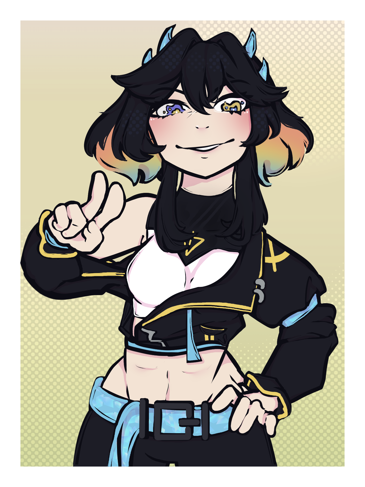

Callie
congratulations! you are most like the hottest streamer on whats left of the planet! callie is a toxic, self-centered urbex streamer that likes to play videogames. your best friend is no different than a lab rat! she enjoys long walks on the crowded streets of delta: prism, but secretly prefers the comfort of her own bed. during her urbex adventures, she had been a big thorn in the governments side. after being captured and punished profusely, she now serves loyalty under the government, the triad. callie keeps those she cares about close to her heart, though theyll never know. the heart is what keeps you alive.